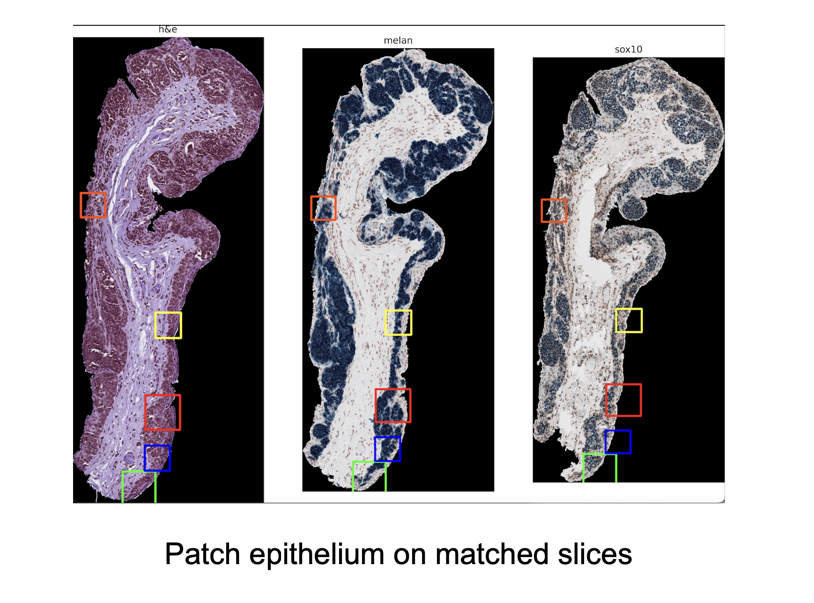
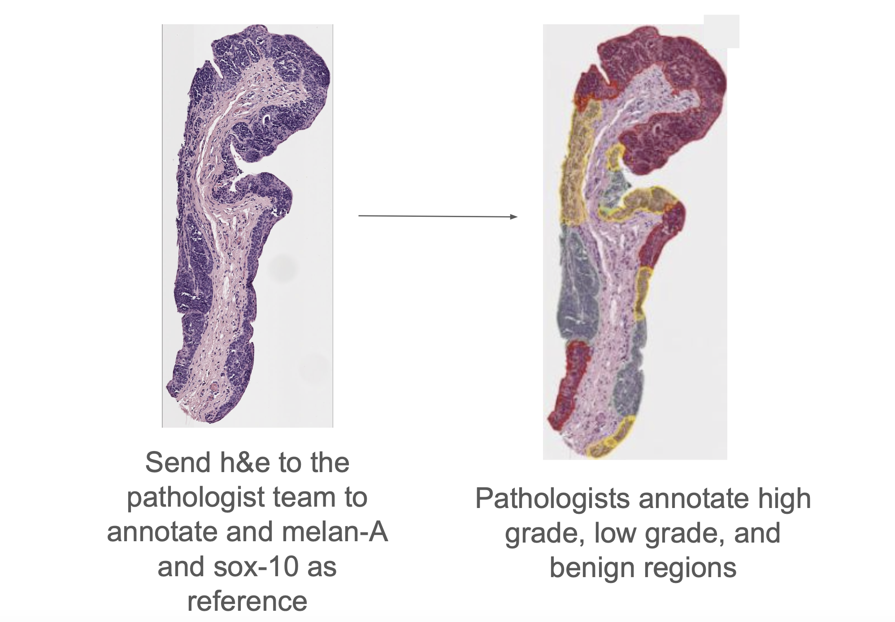
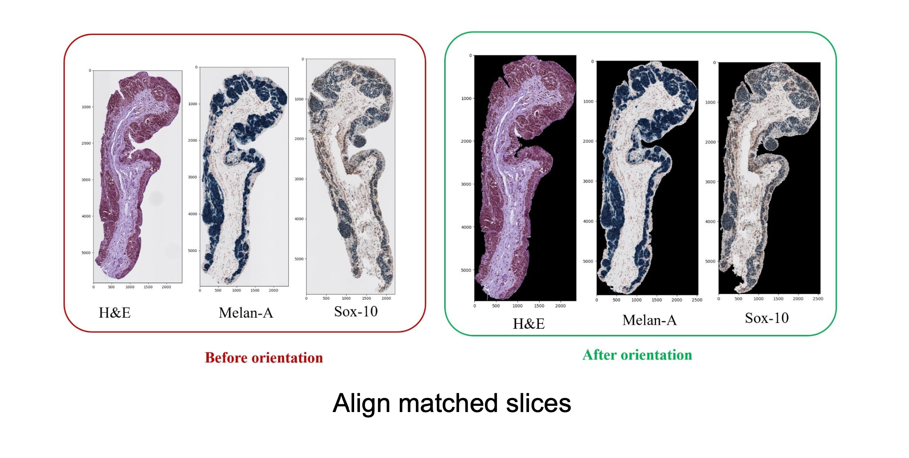
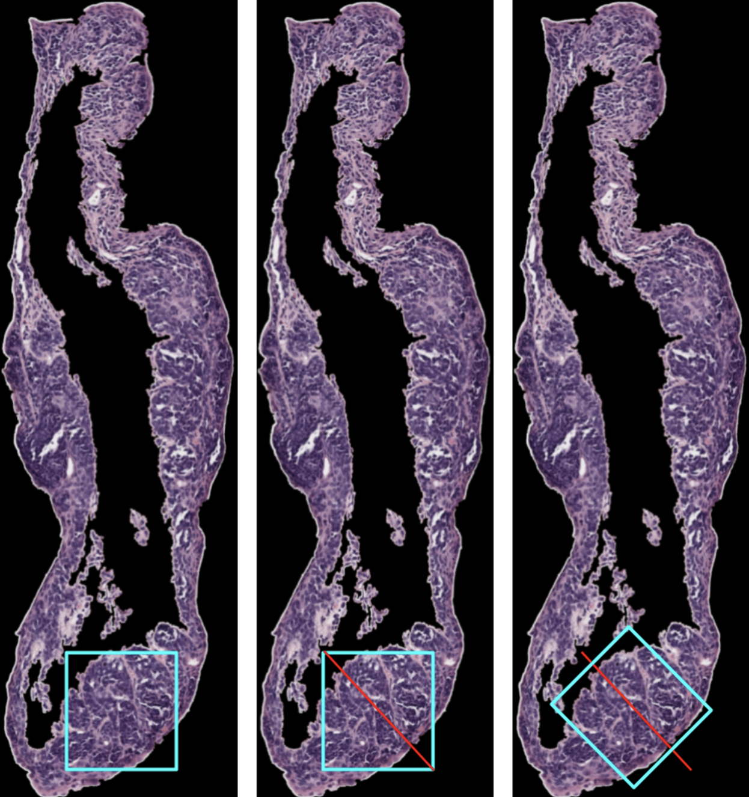

Step 4: Patching
Aim:. To determine whether a fixed patch size can be used effectively for patching. We propose running a patching algorithm on one stain and analysing the distribution of patches it generates. If a large majority of the patches are a specific size, that size can be considered the optimal. Since the distribution of patches will be the same across stains, the optimal patch size found can be used across all three stains.

Pathologist Team Step
Before this step, we will send matched and extracted epithelium slices to the pathologist team to annotate the regions.

Once this step is complete, we can begin patching.
Methodology
The rotation patching code processes stained tissue images by aligning them spatially, segmenting key regions (epithelium and stroma), and extracting patches for comparative analysis across different stains (H&E, Melan-A, and Sox-10). It begins by aligning images through contour detection, cropping, and optimizing overlap between stains. The algorithm creates a skeleton by converting the image into a binary format, reducing the tissue to a central line. The skeleton represents the edge of the tissue, the boundary of the epithelium, and is used as a guide for placing patches. At each point on the skeleton, the algorithm calculates the slope between neighbouring points, which defines the orientation of the patch. Using this orientation, it forms a square patch which aligns with the boundary. The patch is kept only if it includes regions from the stroma and the background, ensuring that the full width of the epithelium is captured in most cases. Overlapping patches are removed in the final step.
Follow this step-by-step manual to patch the epithelia.
Code required:
- rotate_extract_patch (1).py
Run rotate_extract_patch (1).py.
Results
Orientation

Comparing Approaches
Alyssa’s Code
| Pros | Cons |
|---|---|
| - Patches grow until they cover a sufficient region of the epithelium, which allows for better adaptability across different epithelium widths - Advantage 2 |
- Incrementally increases patches using very small step sizes, making her code time consuming - Disadvantage 2 |
Aryaman’s Code
| Pros | Cons |
|---|---|
| - Advantage 1 - Advantage 2 |
- Disadvantage 1 - Disadvantage 2 |
Eli’s Code
| Pros | Cons |
|---|---|
| - Advantage 1 - Advantage 2 |
- Disadvantage 1 - Disadvantage 2 |
Tilting the patches
Tilting of patches could lead to smaller, more efficient patches. Smaller patches are advantageous because we will get more data to work with. Each patch will also have less data in it, and our model may have an easier time picking up on patterns. Also, tilting the patches, means that the epithelium is always in the same orientation in each patch. Our model will not have to determine the orientation of a sample. Perhaps, this will lead to a simpler, more efficient model.
Aryaman’s algorithm
We use edge detection and find the slope between two points on the edge. Using that slope, we create one edge of the square. This way, the square is tilted to match up with the angle of the sample.
Upsides: There is already code for that edge detection and finding the edge of the square.
Downsides: The samples are very irregular, so, when the edge is extended, a patch could cut off a lot of epithelium. That cut off epithelium could then be picked up by other patches, but there might be inefficiency in the patching this way. Also, see downsides of Aryaman’s whole algorithm.
Different tilting algorithm:
We pick a random patch. Next, we identify the stroma and the outside of the sample. We treat the pixels of the stroma and the outside of the sample as points. Using these points, we run a regression model to draw the line that most efficiently crosses the epithelium. Now, we will tilt the patch so that two edges are perpendicular and two edges are parallel to that regression line. This will create a patch that follows the contour of the epithelium. Below is a visual representation of this process.

Upsides: this method is not very computationally expensive, especially with the epithelium mask that we have for each sample already.
Downsides: When tilting an existing patch, we cannot ensure that the patch still includes the entire epithelium unless we also resize the patch.
Note: This separates the tilting from the patching process. While this is not necessarily a negative, we don’t know which patching algorithm works best with this method yet. It adds another step to the process.